Isolated mitochondria were transferred into granulocytes across several runs. Uptake was low and the activity signal was lost within about 20 minutes. Two constraints came out of it: the cells are fragile, and uptake is genetically limited.
Objective
- Deliver functional mitochondria into neutrophils.
- Keep them active long enough to produce a measurable effect.
Method
- Isolate mitochondria from donor cells by differential centrifugation.
- Label with a fluorescent activity dye.
- Co-incubate with granulocytes.
- Follow the fluorescent signal over time.
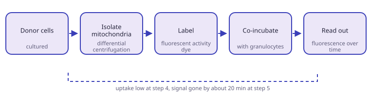
Results
- Uptake was low in every run.
- Transferred mitochondria lost detectable activity after about 20 minutes.
- Lipid-mediated delivery was the first hypothesis for the loss. It was dropped once the cause became clearer.
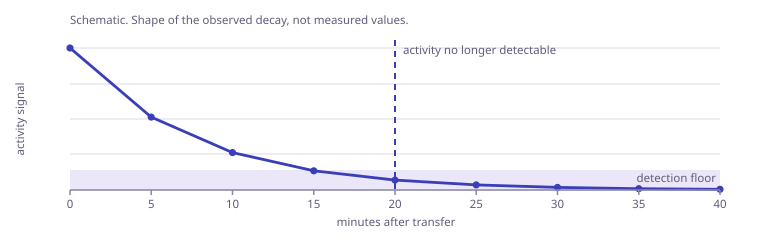
“Science, my lad, is made up of mistakes, but they are mistakes which it is useful to make, because they lead little by little to the truth.”
Jules Verne, Journey to the Center of the Earth
What explained it
- The neutrophils were too fragile.
- Mitochondrial uptake is genetically limited. This came out of the secondary transfer analysis running in parallel.
- Another team is doing this with finer technology, transferring mitochondria into whole blood without separating them first.
From the bench
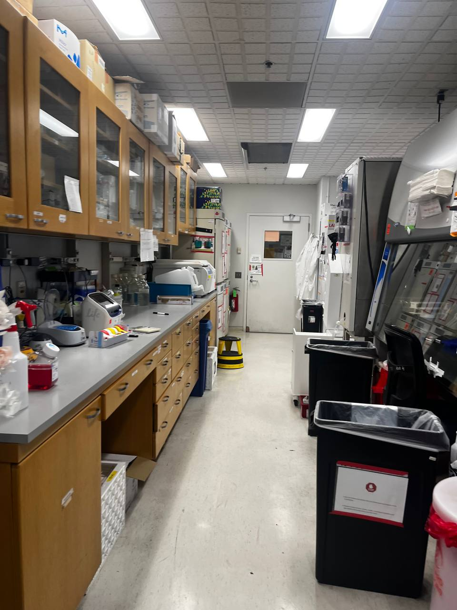
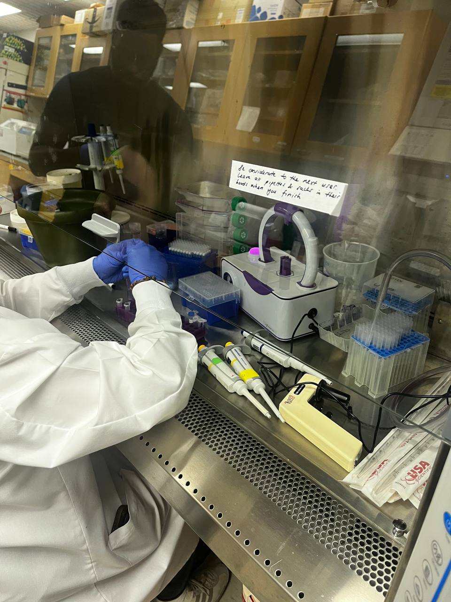
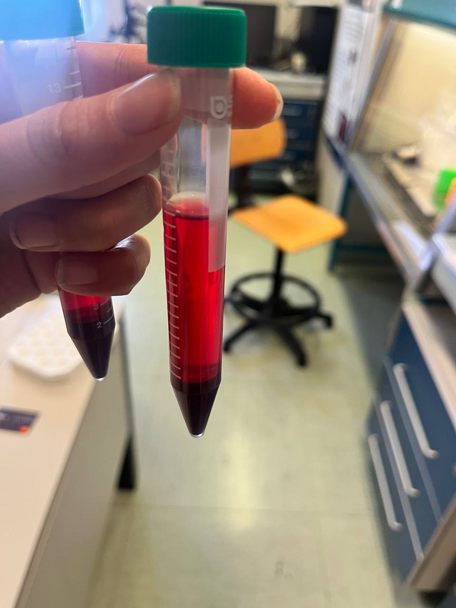
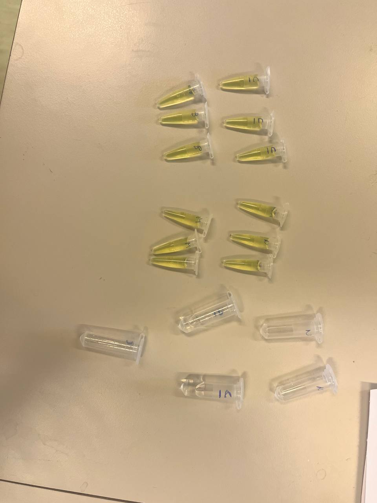
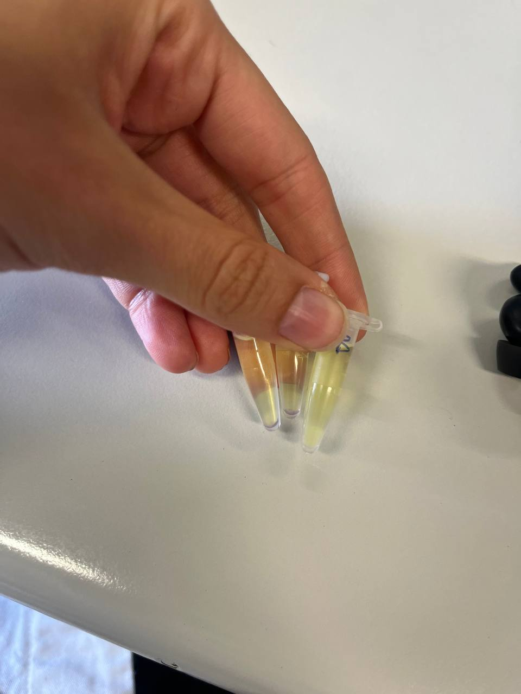
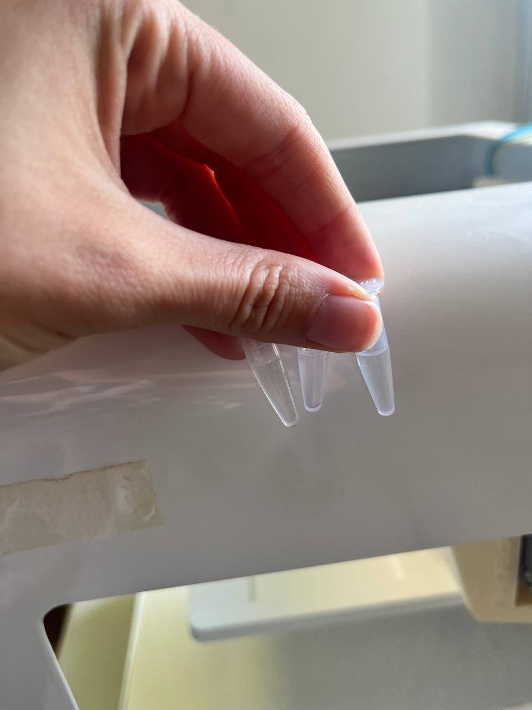
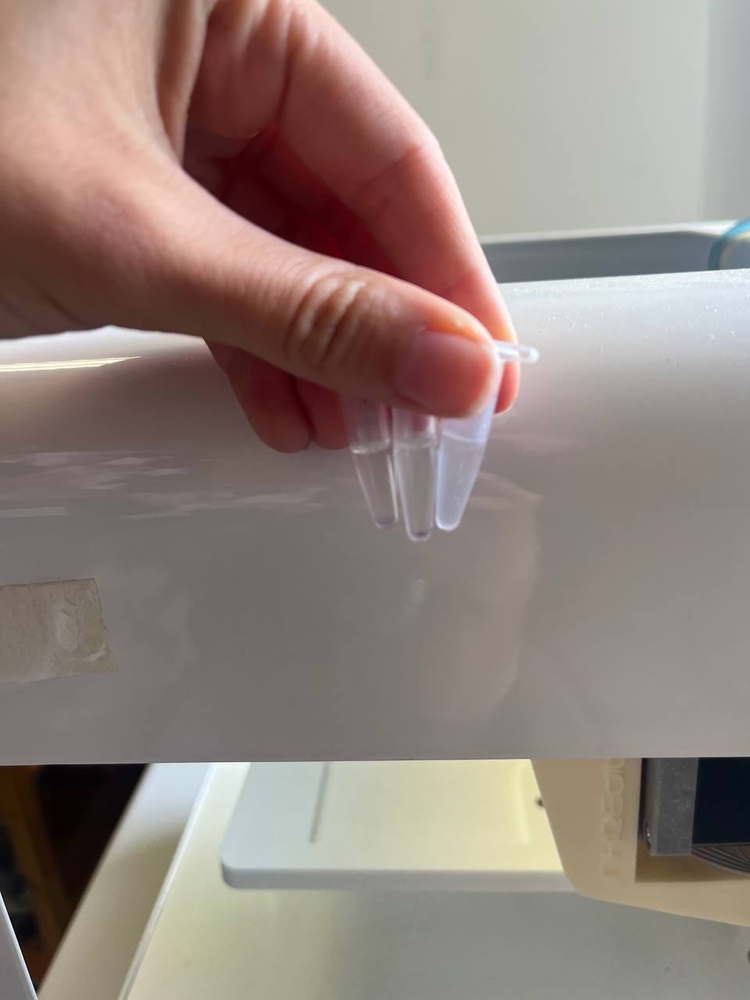
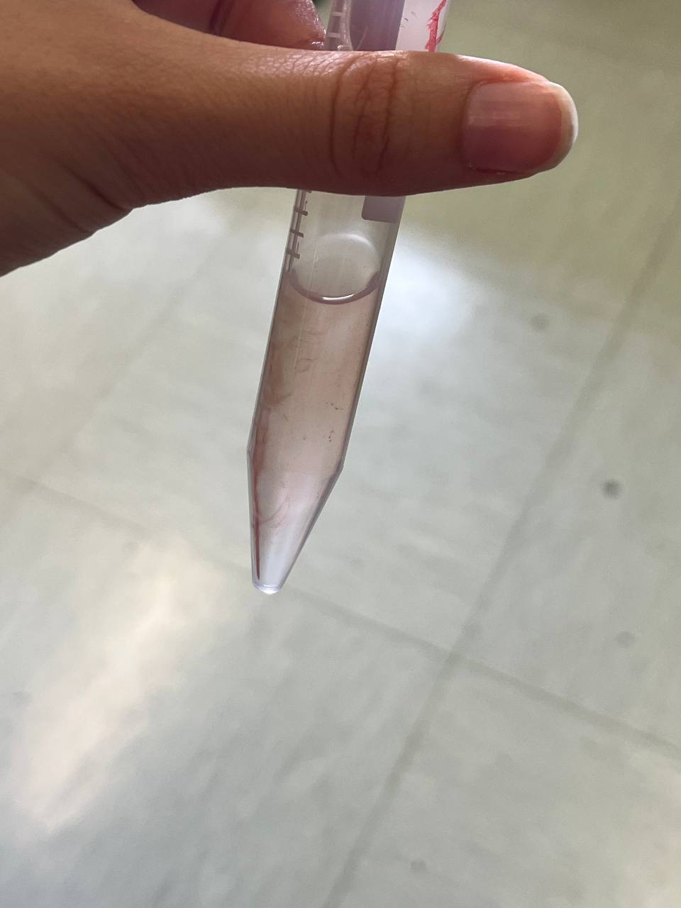
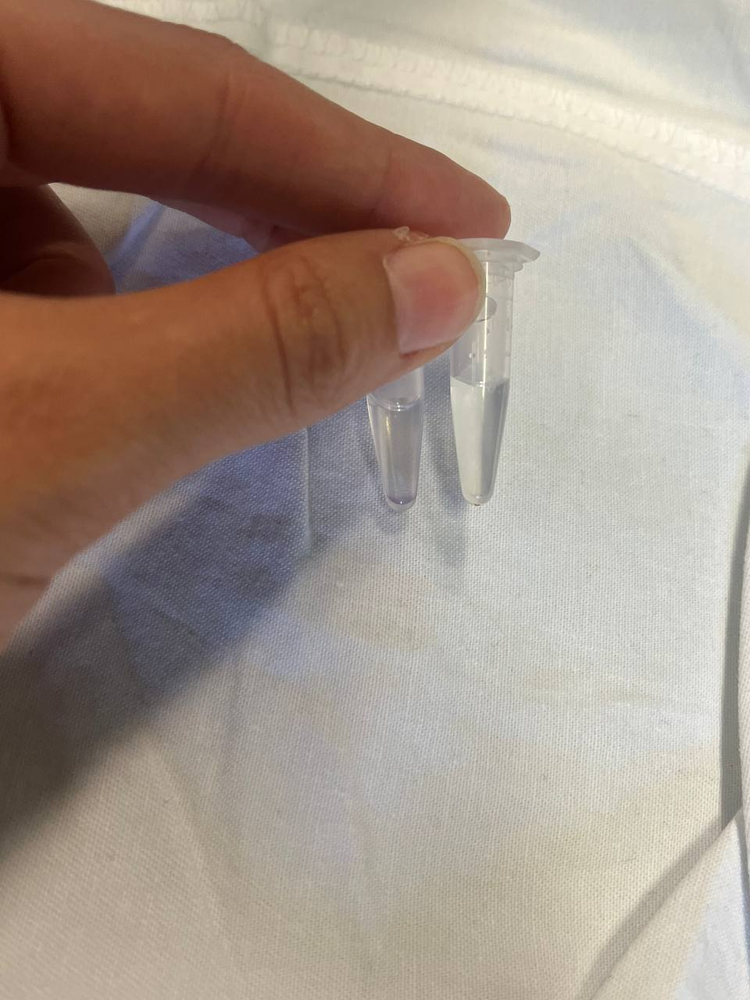
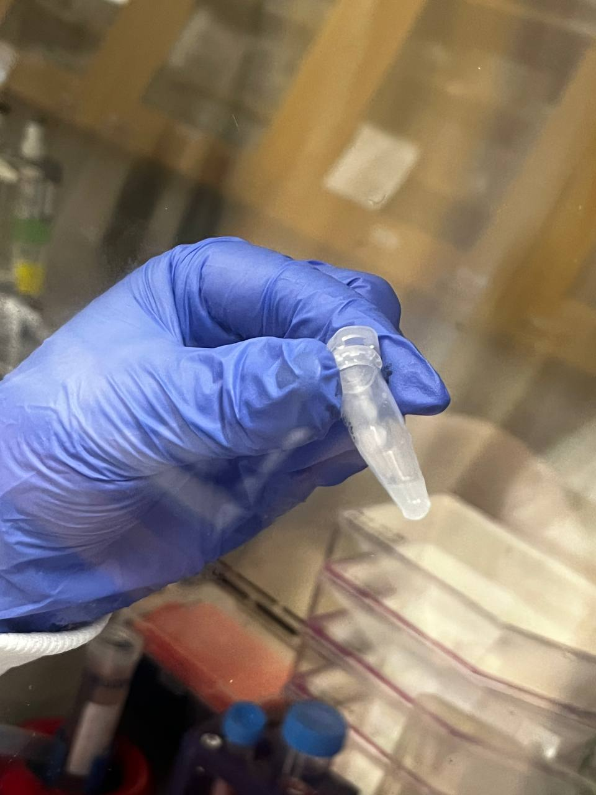
Isolation, labelling and transfer runs. Pellets, gradient fractions and the bench they were done on.